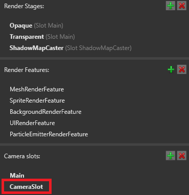
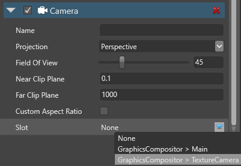

Camera slots
Camera slots link the graphics compositor to the cameras in your scene. You bind each camera to a slot, then define which slot the compositor uses. This means you can change the root scene or graphics compositor without having to assign new cameras each time.
You don't have to create a different camera slot for each camera. Instead, you can just change which cameras use each slot. The best practice is to disable the camera components on cameras you don't need.
Note
Each camera slot must have a camera assigned to it. If you have an unused camera slot, delete it.
You can't assign a single camera to more than one slot. If you need to do this, duplicate the camera entity and assign it to a different slot.
If multiple enabled cameras in your scene use the same camera slot, the result is undefined.
Create a camera slot
In the Asset View (in the bottom pane by default), double-click the Graphics Compositor asset.

The graphics compositor editor opens.

For more information about the graphics compositor, see the Graphics compositor page.
In the graphics compositor editor, on the left, under Camera slots, click
 (Add).
(Add).
Game Studio adds a new camera slot to the list:

Tip
To name a camera slot, double-click it in the list and type a new name.
Bind a camera to a camera slot
In your scene, select the entity with the camera component you want to bind.
In the Property Grid (on the right by default), in the Camera component properties, under Slot, select the slot you want to bind the camera to.
Note
The drop-down menu lists camera slots from the graphics compositor selected in the game settings.

The graphics compositor matches enabled cameras to their appropriate slots each frame.
Create a camera and assign a camera slot from a script
Use:
var camera = new CameraComponent();
camera.Slot = SceneSystem.GraphicsCompositor.Cameras[0].ToSlotId();
To change the camera at runtime, toggle the Enabled property.
Note
Make sure you:
always have at least one enabled camera
don't have multiple cameras enabled and assigned to the same slot at the same time